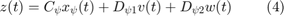

Integral Quadratic Constraints
Introduction
Integral Quadratic Constraints (IQCs) are used in some LPV analysis algorithms in LPVTools. Their function is to bound the input-to-output map of a system component for the purposes of analysis. IQCs were introduced by A. Megretski and A. Rantzer [1] to provide a general framework for robustness analysis.
An IQC is defined by a symmetric matrix and a stable linear system . is denoted as
A bounded, causal operator satisfies an IQC defined by if the following inequality holds for all  , and :
, and :
where is the output of the linear system :

The notation is used if satisfies the IQC defined by . Figure 1 provides a graphic interpretation of the IQC. The input and output signals of are filtered through . If then the output signal satisfies the (time-domain) constraint in Equation (2) for any finite-horizon .
Figure 1: Graphic interpretation of the IQC.
Integral Quadratic Constraints in LPVTools
IQCs are used for worst-case analysis (lpvwcgain) of uncertain LPV systems (grid-based [3] and LFT-based [4,5,6]), and for analysis (lpvnorm) of nominal (not uncertain) rate-bounded LFT-based LPV systems [7]. In each case the IQCs are used to bound the input-to-output map of some element in the system (the uncertainty block for worst-case analysis, and the parameter block for rate-bounded analysis of LFT-based LPV systems). The implementation of these algorithms requires the user to specify basis functions for the stable linear system . The basis functions are currently constrained to be either constant or first order systems. The analysis functions require the user to supply a 1xN double row vector of positive numbers, which specify the real, stable poles of N first order basis functions to be used. If no vector is supplied, the software autmatically selects a constant term and three first order systems as the basis functions for in the analysis.
Additional Information
Reference [1] provides a library of IQC multipliers that are satisfied by many important system components, e.g. saturation, time delay, and norm bounded uncertainty. The IQCs in [1] are expressed in the frequency domain as an integral constraint defined using a multiplier . The multiplier can be factorized as and this connects the frequency domain formulation to the time-domain formulation used here. One technical point is that, in general, the time domain IQC constraint only holds over infinite horizons (). The work in [1,2] draws a distinction between hard/complete IQCs for which the integral constraint is valid over all finite time intervals and soft/conditional IQCs for which the integral constraint need not hold over finite time intervals. The formulation of an IQC here, as a finite-horizon (time-domain) inequality, is thus valid for any frequency-domain IQC that admits a hard/complete factorization . While this is somewhat restrictive, it has recently been shown that a wide class of IQCs have a hard factorization [2].
References
- A. Megretski, and A. Rantzer, "System Analysis via Integral Quadratic Constraints," IEEE Transactions on Automatic Control, Vol. 42, No. 6, pp. 819–830, 1997, doi: 10.1109/CDC.1994.411315.
- A. Megretski, "KYP lemma for non-strict inequalities and the associated minimax theorem,”, Arxiv, 2010, (arXiv:1008.2552).
- H. Pfifer and P. Seiler, "Robustness Analysis of Linear Parameter Varying Systems Using Integral Quadratic Constraints," American Control Conference, pp. 4476-4481, 2014, doi: 10.1109/ACC.2014.6858751.
- C. Scherer and S. Wieland, "Linear matrix inequalities in control," Lecture notes for a course of the dutch institute of systems and control, Delft University of Technology, 2004.
- C. Scherer and I. Kose, "Robustness with dynamic IQCs: An exact state-space characterization of nominal stability with applications to robust estimation," Automatica, Vol. 44, No. 7, pp. 1666-1675, 2008.
- C. Scherer, "LPV control and full-block multipliers," Automatica, Vol. 37, No. 3, pp. 361-375, 2001.
- A. Helmersson, "An IQC-based stability criterion for systems with slowly varying parameters," Technical Report LiTH-ISYR-1979, Linkoping University 1997.